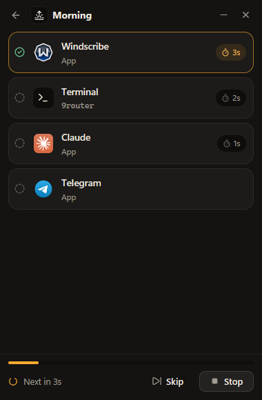

The problem
The same routine,
by hand, every day.
1
Open Windscribe
wait for the VPN
2
Open a terminal, type 9router
wait for it to start
3
Open Claude
4
Open Telegram
→
With Roshan,
press Run once
